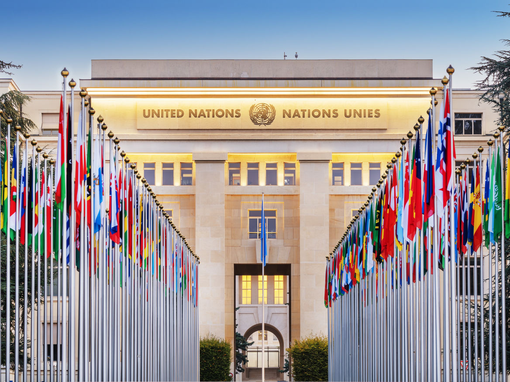

Le droit de veto est-il une arme diplomatique encore forte ou bien un instrument devenu déjà obsolète ? C’est la question que l’on se pose quand on entend parler d’un « veto » appliqué contre une résolution formulée par l’ONU…

Le fonctionnement du droit de veto au cœur de l’ONU
L’ONU c’est l’Organisation des Nations-Unies, regroupant l’ensemble des pays du monde officiellement reconnus afin de gérer les affaires mondiales et d’assurer un lien diplomatique entre chaque pays pour garantir la paix mondiale.
Oui c’est en 1945 que l’ONU est créée pour éviter une nouvelle guerre mondiale.
En fait pour être plus précis, l’ONU est composée d’une Assemblée générale regroupant les représentants des 193 pays membres, ainsi que du Conseil de sécurité ne regroupant que 15 États membres, dont 5 États occupant un siège permanent, les 10 autres étant tirés au sort suivant des règles strictes.
C’est précisément uniquement les 5 États permanents du Conseil de sécurité de l’ONU qui disposent de ce droit de veto. Sont concernés les États-Unis d’Amérique, la Chine, la Fédération de Russie, le Royaume-Uni de Grande-Bretagne et d’Irlande du Nord et la France. Ce droit leur permet de voter contre une résolution de l’ONU, s’exprimant par un vote négatif. Un seul veto suffit pour mettre fin à la résolution formulée par les autres États membres. C’est donc un véritable moyen de blocage, un avantage diplomatique certain pour ces 5 pays par rapport au reste des membres de l'Assemblée générale.
Les remises en cause du droit de veto
Évidemment cet avantage n’est pas apprécié ni accepté par l'ensemble des États membres. C’est pourquoi des contestations sont émises face à ce « privilège » considéré comme injustifié de nos jours. Des puissances comme l’Allemagne, le Japon ou même l’Inde pourraient revendiquer l’obtention de ce droit étant parmi les premières puissances économiques mondiales avec un impact diplomatique fort au-delà de leurs frontières continentales respectives.
La question de légitimité de ce droit se pose alors lorsque l’objectif des Nations-Unies est de permettre l’expression de la voix de chaque État-membre avec la même force diplomatique, un État représentant une voix pour le vote des résolutions à l'Assemblée générale.
Le droit de veto « paralyse » en effet certaines résolutions voire avancées pour résoudre un conflit lorsque les États permanents l’utilisent pour défendre leurs intérêts personnels.
Le droit de veto de la France à l’ONU et son rôle médiateur de première classe
La France faisant partie des 5 États permanents du Conseil de sécurité de l’ONU, elle dispose donc du droit de veto. Pourtant, la France a peu utilisé son veto par rapport à la Russie ou aux États-Unis représentant les trois-quarts des blocages appliqués. Cela n’en demeure pas moins un instrument de puissance octroyant un poids diplomatique supplémentaire dans la stratégie française pour les négociations à l’ONU.
Le veto utilisé pour s’opposer à la participation française à la guerre en Irak en 2003 voulue par les États-Unis est certainement l’usage le plus marquant du veto français. Pourtant, celui-ci n’a pas empêché une déclaration de guerre américaine contre l’Irak de Saddam Hussein la même année.
Alors, le veto est un instrument de décision unilatérale puissant certes, mais présentant des limites en pratique notamment face aux grandes puissances à tendance hégémonique comme c’est le cas des États-Unis ou de la Chine. Le veto n’est pas suffisant pour s’imposer diplomatiquement face à un autre pays disposant lui aussi de son veto.
Pour la France, le veto est donc plus interprété comme une responsabilité qu’un privilège à proprement parler.
Encore faut-il savoir user à bon escient de cette arme diplomatique sans s’attirer les feux de ses rivaux…
Sources :
Vie Publique, « Qu’est-ce que le droit de veto au conseil de sécurité de l’ONU ? » (16 septembre 2024).
UN Research Guides, « Les membres de l’Organisation des Nations Unies: Composition du Conseil de sécurité par année » (mis à jour en 2025).
France ONU, « La France considère que le véto n’est pas un privilège mais une responsabilité » (21 janvier 2025).